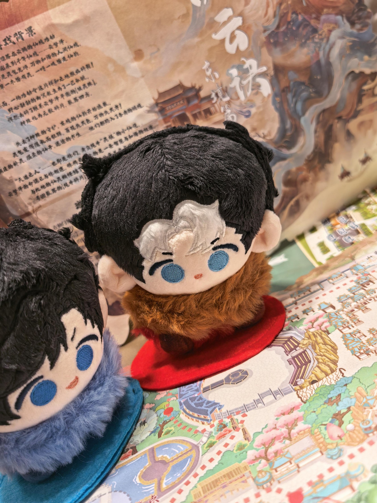

Hi, I'm Siye Chen.
I build clean, human-centered web experiences.
Graduate student in Digital Education at Xi'an Jiaotong-Liverpool University, with an undergraduate background in Elementary Education.

Design-minded engineer who cares about the details
I am a graduate student in Digital Education at Xi'an Jiaotong-Liverpool University. My undergrad was in Elementary Education, and I graduated from Huaiyin Normal University.
More about my journeyA few of my favorite things
Off-the-clock picks — the films, tracks and creatures that make me happy.
Movies
- The Grand Budapest Hotel
- Spirited Away
- Interstellar
Songs
- Pink Floyd — Comfortably Numb
- Daft Punk — Get Lucky
- Miles Davis — So What
Animals
- Red panda
- Octopus
- Arctic fox
A little day planner I built
Pick a date on the calendar, jot down what you need to do, and check things off as you go. Your list stays saved in this browser.
Today
No tasks yet — add one below.
Let's build something great together
Have a project in mind, a role to fill, or just want to say hello? My inbox is always open — I usually reply within a day.
Fun facts about me
- I can turn almost any topic into a classroom game — my elementary-education reflexes never really switch off.
- Piaget, Vygotsky and Montessori occasionally slip into my casual conversations before I even notice.
- I genuinely believe a well-designed lesson slide is a small love letter to your students.
- New stationery — notebooks, highlighters, a nice pen — still makes me unreasonably happy.
- My bookmarks folder holds more learning apps and teaching tools than shopping sites.
- I think the best educational technology is the kind that quietly disappears behind good teaching.